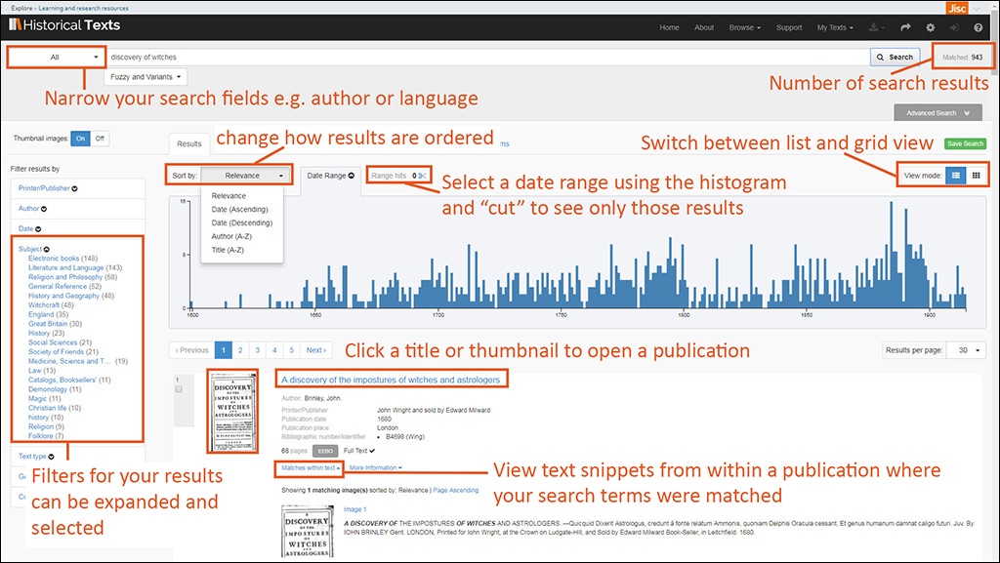
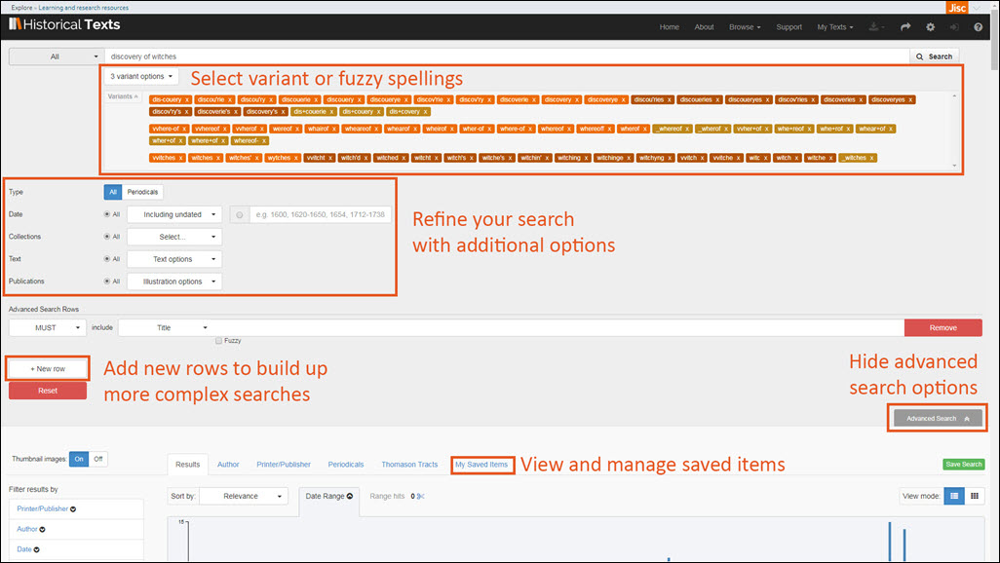
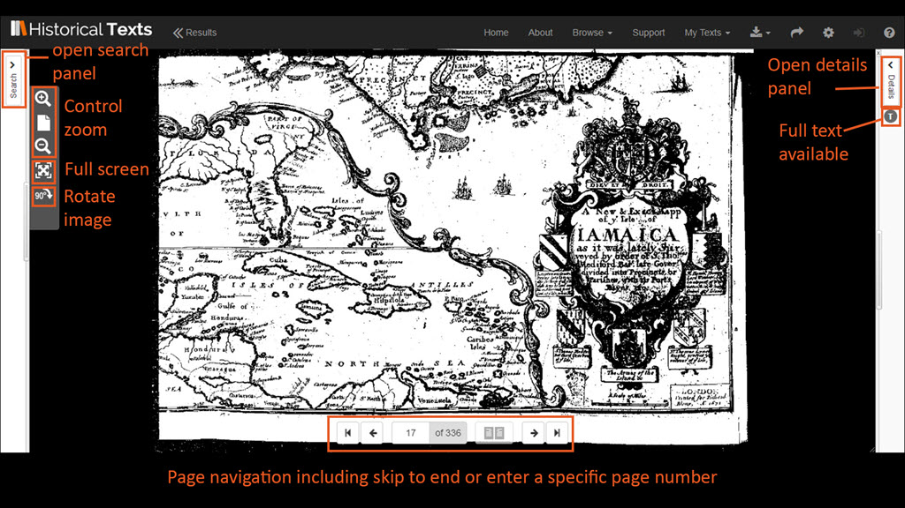
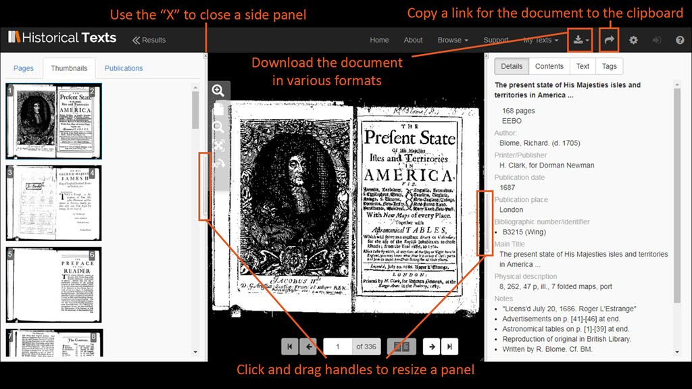
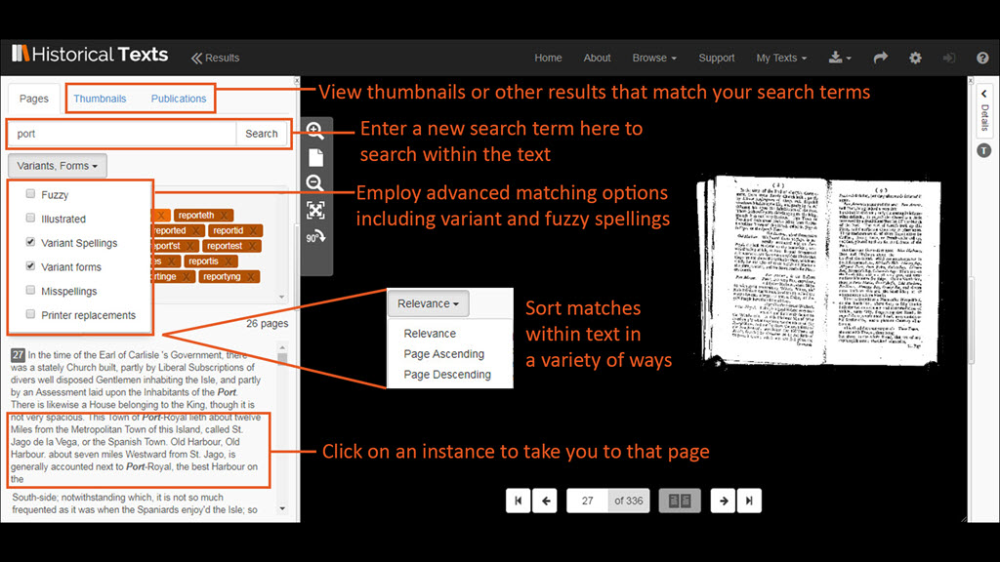
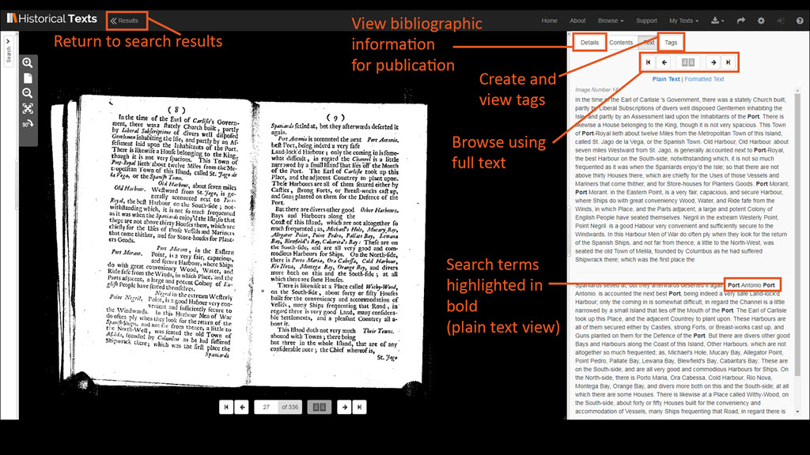

- Support Home
- Quick Reference Guide
Quick Reference Guide
Last updated 20 July 2018
This is the online version of the Historical Texts Quick Reference Guide. If you wish, you can download this guide as a PDF file for offline viewing: Quick Reference Guide (PDF, 1953KB).
You can click on any of the images below to see a bigger version for easier viewing.
The Quick Reference guide will help users to get going on the Historical Texts service as quickly as possible. It isn't intended to cover every feature or possible usage scenario.
If you have any queries or require assistance please contact the Historical Texts helpdesk at historicaltexts@jisc.ac.uk
Historical Texts now contains four collections: Early English Books Online (EEBO), Eighteenth Century Collections Online (ECCO), British Library 19th Century Collection (BL) and the UK Medical Heritage Library.
Search View, with results shown below

- Enter your search terms in the search field and click the Search button to run it. The number of matched results will be shown in the top right of the screen.
- Choose which fields to search on using the drop-down arrow. You can choose from All Fields, Title, Author, Printer/Publisher, Place of Publication, Bibliographic Number, Language, Illustration Description, Subject, Genre, Text type or Collection.
- Clicking the Advanced Search button will display more search options.
- You can switch between Grid or List view and change the number of results displayed per page.
- The Histogram tool shows you a graphical distribution of your search results over time. You can click and drag to make a date selection and then use the scissor icon to finalise the selection.
- Bibliographic data for the results is shown, including which collection it is from and whether the full plain text is available for it. A preview of the items content is displayed as part of the bibliographic details.
- Clicking the title or thumbnail of a result will open it in the Viewer.
- The side bar contains filters for Publisher, Author, Date, Subject, Text type, Genre and Collection.
Search View, expanded to show Advanced Options

- Expand your search results by adding fuzzy and variant spellings, misspellings and printer replacements.
- Limit your search results by placing restrictions on date ranges, collection, searching within the full text or description and whether a publication is illustrated.
- You can add rows to include additional search terms and choose which fields they search on. The MUST, MUST NOT and SHOULD drop down option can be used with additional rows to create conditional searches.
- To clear the search form and start again, click the Reset button.
- Click the advanced search button to minimise the search bar again.
- Use the My Saved Items tab to view and manage your saved items.
- Click the tabs to browse through your search results by Author, Printer/Publisher, Periodicals and Thomason Tracts.
Using the Viewer to look at a publication

- When using the Viewer, you can navigate through the publication and toggle single or side by side page views using the toolbar near the bottom-middle of the page.
- You can zoom in or out of the image, rotate in 90 degree steps, and switch to a full screen view from the toolbar to the left hand side of the screen.
- Click the Search button on the left hand side to open the Search Panel for more options.
- Click the Details button to open the Details Panel for more options. The T icon indicates that the full text is available for this publication.
The Viewer, with the Search and Details panels open

- In the Search Panel to the left, click a thumbnail to jump to that page immediately.
- Use the X to close and the handles to resize the side panels
- Click the Down Arrow icon near the top right of the screen to see options for downloading the whole publication as a PDF, a single page as a JPEG, or the citation data in the .RIS format.
- Click the Right Arrow icon near the top right of the screen to copy a permanent URL that links directly back to this publication.
- In the Details Panel to the right you can view the bibliographic data for the publication
- The Search Panel, Viewing Panel and Details Panel can all be used simultaneously if desired.
Searching from within the Viewer

- In the Pages panel of the search bar, you can enter a search term to find within the open document.
- Fuzzy and variant spellings can be applied to the search and search results can be ordered by relevance or by page number
- Clicking on an instance of a word takes you to that page.
- Click on the thumbnail or publications tabs to switch between these options
Navigating Through the Full Text in the Viewer

- Click the Results link near the top to return to your search results list.
- Use the tabs at the top of the details panel to toggle between those options including to create personalised tags for documents.
- You can browse through the text using the back and forth arrows in the Text tab of the details panel.
- You can switch between plain and formatted text using the options below the navigation panel. If you have searched within the text, search terms will be highlighted in the plan text view.